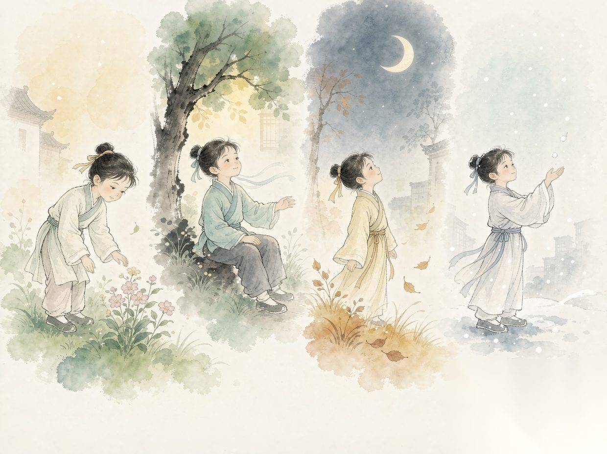

曰春夏，曰秋冬
前面我们学完三纲：君臣义、父子亲、夫妇顺，明白了人与人相处的根本准则。经文再次转回天地，告诉我们一年有四个时节，叫做春、夏、秋、冬。
春天暖风到来，草木发芽，小动物慢慢苏醒，是生发的时节；
夏天阳光充足，万物蓬勃生长，草木枝叶繁盛；
秋天风清气爽，果子成熟，庄稼收割，是收获收敛的时候；
冬天寒凝大地，草木凋零，万物藏起来休养生息。

古人有一句很美的诗，恰好道出四时本有的美好：春有百花秋有月，夏有凉风冬有雪。
四季各有专属的风景，没有哪一个时节是多余、不好的。

四时轮转，不会一直旺盛，也不会一直萧瑟。有生长，就有收敛；有蓬勃，就有静养。
这个道理也对应我们自身：学习、成长是春夏；休息、沉淀是秋冬。
懂得张弛交替，不一直紧绷，也不一直懈怠，才合乎天地的节律。
四时各有佳景，我们也要学会接纳当下的阶段，在每一段时光里看见美好。
只想一直往前冲刺，不肯休息沉淀；害怕低谷、休歇，以为停下就是退步。
该生发则奋进，该静养则安守；明白生长与收藏本是循环，起落皆是常态，四时皆有风光。
- 春夏秋冬，是天地恒定的循环节律。
- 四时之道：春生、夏长、秋收、冬藏。春有百花秋有月，四时各有美好。
- 成长也像四季，有进取的时候，也有安静沉淀休息的时候。
- 顺应节律，接纳当下，劳逸结合，才是长久之道。
四时不必讲成节气理论，先让孩子看见。三条做法。
一、带着孩子观察四季风物。看花、望月、感受清风落雪，体会「春有百花秋有月」的诗意，不用复杂节气理论。
二、把四时对应作息。努力学习如同春夏生长；睡眠、放空、复盘如同秋冬收藏。
三、承接教与学的二分。家长引导观察季节变化、建立规律作息，属施教一侧；孩子体会动静循环、学会劳逸结合，是自主修习。
接上选择力练习：四时循环的规律不变，孩子可以在不同时节找到自己喜欢的亲近自然的方式。
曰春夏，曰秋冬
一 · 字义与句读曰，谓之也。春生，夏长，秋收，冬藏。全句：一年之中，称作春、夏、秋、冬四时。
从人伦纲纪，复归于天道气化；三才、三光之后，再展开时序循环的大规律，天人次序连贯。
附禅偈参照：「春有百花秋有月，夏有凉风冬有雪。若无闲事挂心头，便是人间好时节。」此偈补足本句的一层心境：四时流转是客观天道，而能不能看见四时之美，在于内心是否安宁无滞。
二 · 命题考辨勘误重点：不要只当成季节名词背诵。在阴阳气化体系中，四时是阴阳消长的完整周期：阳气由春升、夏极，继而秋降、冬伏。
这套模型不只是气候描述，更是东方的底层思维模型：一切事物都有生发、壮大、成熟、归藏四个阶段。
修心、做事、学问积累，都有这四段周期。一味求生发、求进展，不懂收敛藏养，容易耗散。
「春有百花秋有月」不是美化一切境遇，而是破除执念：不必执着某一种状态，每个阶段自有本然风光。
三 · 中西对照华夏象数：四时是阴阳消长的循环，用以类比人事、心性的进退；禅偈则转向心性觉知，在时序之中安顿自心。
现代气象学：四季是地轴倾斜带来的太阳辐射变化，是客观天文气候现象。
西方自然观：侧重客观观测；中国传统思想一边观察时序规律，一边提炼「循环、张弛、安心当下」的生命智慧。
反向思辨：接纳四时之美，容易滑向消极认命；安心当下不等于放弃精进，顺时序而不困于时序。
四 · 与前后课的张力次第链条继续延伸：……三纲者，君臣义 → 父子亲 → 夫妇顺 → 曰春夏，曰秋冬。
呼应第十三课「人不学，不知义」：义之中包含时序分寸，知何时进、何时止，安于当下时节。
呼应第十二课「玉不琢，不成器」：心性打磨同样有四季，精进是春夏，静思反省是秋冬，心无挂碍方能处处见风月。
呼应第四课「教之道，贵以专」：教化也需要长久周期，不可急于求成，在漫长时序里慢慢涵养本心。
一、身处热带，四季并不分明，如何体会「春生夏长秋收冬藏」与「春有百花秋有月」的意境？
二、循环往复，是不是意味着一切只是重复，没有真正的升进？
三、如何区分接纳当下、安心时节，和自我逃避、拖延等待？